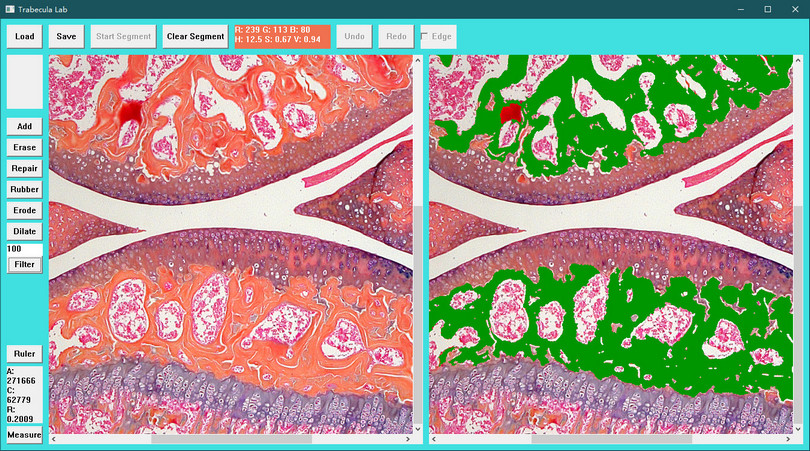

Trabecula Lab
骨组织病理切片显微图像结构形态计量开源软件

软件手册
打开图片
点击“Load”按钮，在对话框中选择要处理的图片的文件名，此时在两个框中显示图片。
选择样本颜色
在右边的框中用鼠标点选样本染色区域的颜色。
初步分割
按下“Start Segment”按钮，此时在右边的框中出现分割结果，用绿色块表示。
增加样本颜色
按下“Add”按钮，此时可以在右边的框中用鼠标点选新的样本颜色，并出现新的分割结果。
擦除不需要的区域
按下“Erase”按钮，此时可以在右边的框中用鼠标点击移动拉出一个黄色矩形框，
作为要擦除的区域，当释放鼠标时，出现新的分割结果。
橡皮
按下“Rubber”按钮，此时可以在右边的框中用鼠标点击并自由移动拉出一条黄色不规则线，
当释放鼠标时，黄色不规则线所在的图像区域恢复原状，形成新的分割结果。
修补部分区域
按下“Repair”按钮，此时可以在右边的框中用鼠标点击移动拉出一个黄色矩形框，
作为要修补的区域，当释放鼠标时，出现新的分割结果。
增加样本颜色、擦除区域、修补区域可以反复进行。
形态学腐蚀操作
按下“Erode”按钮，对全局图像做一次形态学腐蚀操作。
形态学膨胀操作
按下“Dilate”按钮，对全局图像做一次形态学膨胀操作。
连通域面积筛选
设置好连通域面积筛选阈值，默认为20，按下“Filter”按钮，自动剔除连通域面积小于20的区域。
计量结果
按下“Measure”按钮，出现面积、周长、骨小梁比率等计量结果。
测量尺
按下“Ruler”按钮，此时可以在右边的框中用鼠标点击移动拉出一个黄色线，并实时显示线的像素长度。
当释放鼠标时，恢复原状。
软件下载
Trabecula-1.0.1-win64.zip
点击下载
关于我们
浙江中医药大学
www.zcmu.edu.cn